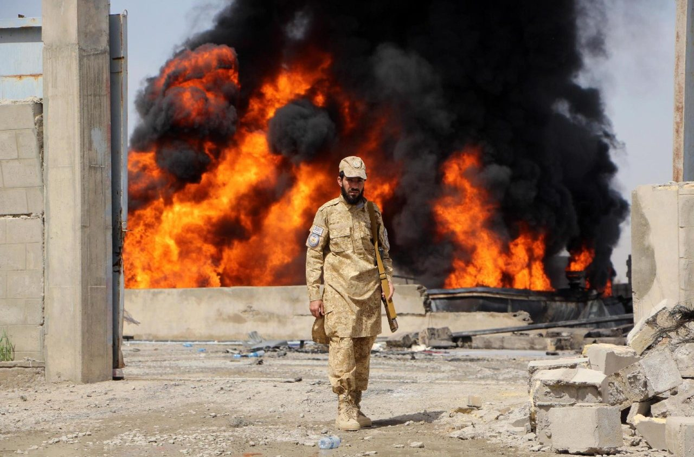

Attualita | 13 marzo 2026
Il Papa: i cristiani con responsabilita nelle guerre facciano un esame di coscienza
Nell'udienza mattutina il Pontefice ha richiamato governanti, operatori dell'informazione e comunita credenti alla responsabilita morale davanti ai conflitti.

Il Papa ha insistito sul fatto che la guerra non puo essere considerata un evento distante, ma una realta che interpella la coscienza personale e collettiva. Nel suo intervento ha ricordato che la pace e un compito storico affidato a tutti, in particolare a chi esercita ruoli pubblici e decisionali.
Il Pontefice ha poi richiamato l'importanza di un linguaggio pubblico capace di ricomporre, non di dividere. Nel passaggio centrale del discorso ha indicato la necessita di una responsabilita condivisa tra politica, societa civile e mondo ecclesiale, affinche il dibattito non cada nella retorica ma produca scelte concrete.
Infine, il Papa ha rivolto un appello ai cristiani impegnati nelle istituzioni e nei media: l'esame di coscienza, ha detto, riguarda il modo in cui si usano parole, immagini e decisioni quando il dolore dei popoli e ancora aperto.